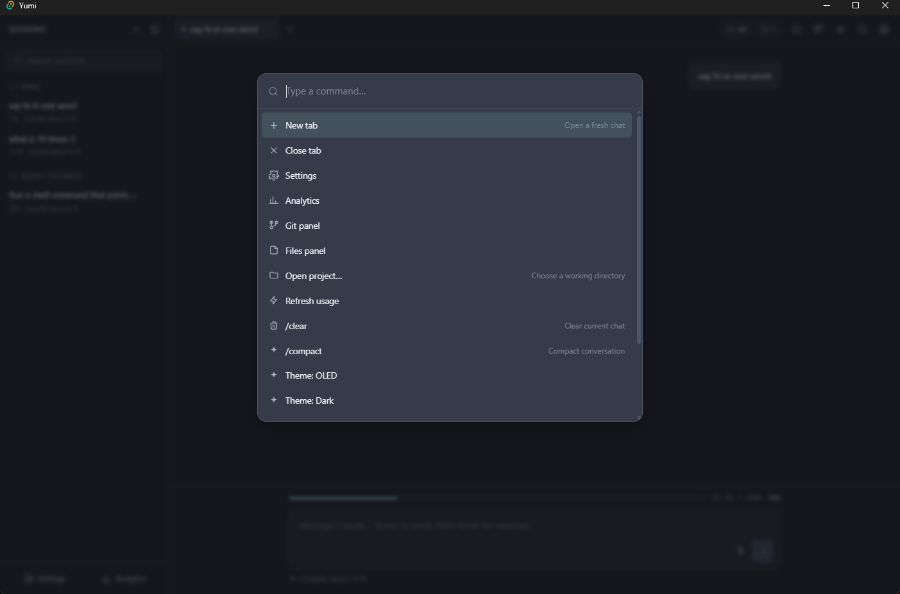
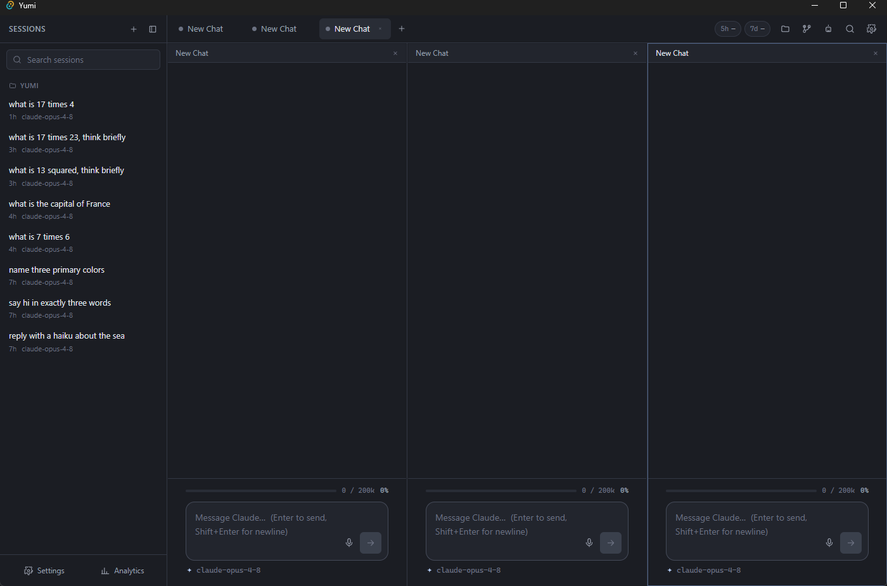
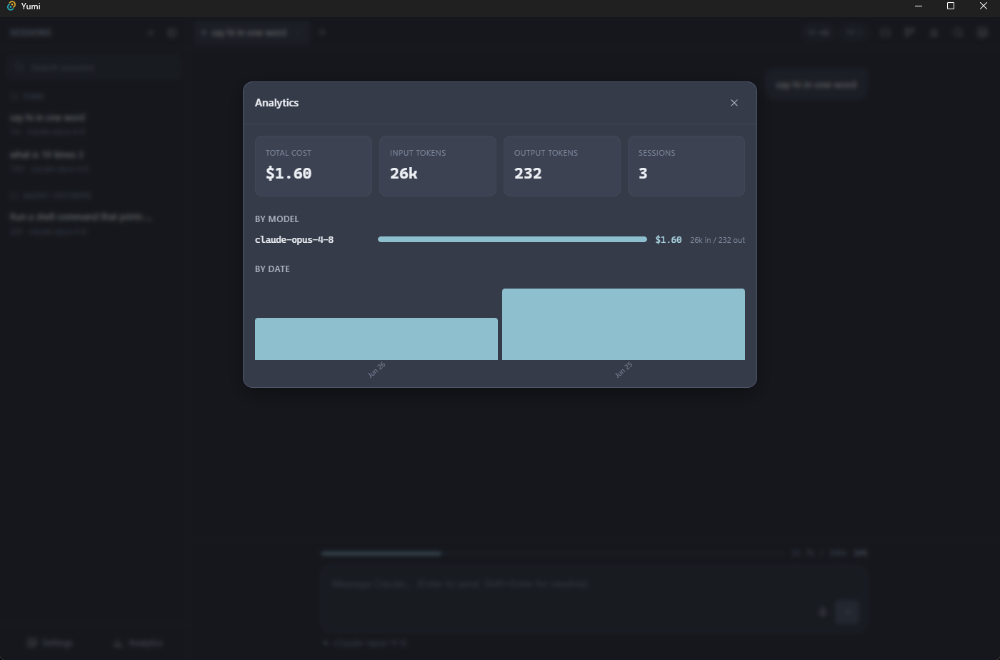

Features & Shortcuts¶
The feature catalogue with its parity status, and the complete keyboard map.
Keyboard shortcuts¶
The global keydown handler lives in src/lib/shortcuts.ts. (Ctrl is Cmd on macOS.)
| Key | Action |
|---|---|
Esc |
close the active overlay, then the active panel |
F5 |
toggle voice dictation |
F7 |
add a split pane (up to 6) |
F8 |
remove the last split pane |
Ctrl+T |
new tab (inherits the current cwd) |
Ctrl+W |
close the active tab |
Ctrl+P |
command palette |
Ctrl+, |
settings |
Ctrl+G |
toggle the git panel |
Ctrl+E |
toggle the files panel |
Ctrl+Y |
analytics overlay |
Ctrl+L |
force-refresh rate limits |
Ctrl+O |
open project (folder picker) |
Ctrl+B |
toggle the sessions sidebar |
Ctrl+Shift+A |
toggle the background-agents panel |
Ctrl+Tab |
cycle to the next tab |
Ctrl+Shift+Tab |
cycle to the previous tab |
The same list is shown in the Settings overlay (the SHORTCUT_HINTS reference).
Feature catalogue¶
Status legend matches yumi/PARITY.md: ✅ done & verified · 🟢 done (lighter
verification) · 🟡 scoped/stub · ⬜ intentionally omitted.

Ctrl+P) — a fuzzy launcher for tabs, panels, overlays, project switching, slash-commands, and theme changes.Core chat loop ✅¶
- Locate + spawn
claude, stream-json parsing,--resume. - Render user/assistant text, thinking blocks, collapsible tool cards (input + result), markdown + syntax highlighting.
- Send, interrupt/stop (tree-kills via the process registry), new session/tab.
- Tabs & sessions, sidebar grouping by project, resume, SQLite persistence.
Settings ✅¶
Provider, model, theme (6 themes, OLED default), vim toggle, thinking toggle, rate-limit toggle, bash-monitor toggle, auto-compact threshold. Persisted to the DB. See Data & Persistence.
Split panes (F7/F8) ✅¶
Up to 6 panes in a CSS grid, each a full ChatPane (own header, messages,
composer). F7 adds, F8 removes; click a pane to make it active. Backed by
store.splitTabs.

ChatPanes side by side, each with its own header, messages, composer, and token bar. F7 adds a pane (up to 6), F8 removes one.History rollback ✅¶
A rewind affordance on every user message (store.rollbackTo) truncates the
conversation back to that turn and reloads the prompt into the composer for
edit/resend, then re-persists.
Background agents (Ctrl+Shift+A) ✅¶
Run a headless claude -p in an isolated git worktree (%TEMP%\yumi-agents\,
branch yumi/agent-<id>), commit the result, then review the diff and merge it
back. The Agents panel shows status + diff + Merge/Cancel/Remove. Requires a git
repo cwd. Implementation: agents.rs.
Voice dictation (F5) 🟢¶
useDictation wraps the Web Speech API; interim + final transcripts append to the
active composer with a "Listening…" indicator. Degrades gracefully when WebView2
has no speech backend.
Live bash monitor 🟢 (opt-in, off by default)¶
With the setting on, shell runs through the MCP bash server and streams live into the tool card's LIVE pane.
Multi-provider 🟢¶
Every provider drives the same claude binary and stream-json parser. A
non-Claude provider (Gemini / GPT / Kiro) is realized by pointing that process
at a translating router (ANTHROPIC_BASE_URL = settings.routerBaseUrl) such as
claude-code-router, LiteLLM, or OpenRouter. Selecting a non-Claude provider with
no router URL configured returns a clear error — never a fake success.
provider.rs exposes build_spawn_plan(provider, prompt, model, resume, router_base_url) → SpawnPlan; the args are identical for every provider, only the base URL differs. Claude is the fully-verified path; the routing mechanism itself is verified (unit-tested in provider::tests).
P1 surfaces 🟢¶
- Rate-limit pills (5h / 7d) — honest + live.
get_usage_limitsreturns an honestly-inert state (live:false, no fake %) until a realrate_limit_eventarrives in-stream; the pills then light up with live status, window type, and reset time viastore._onEvent → parseRateLimit. Until then they render greyed—with an "unavailable" tooltip. See Reliability & Design. - Git panel — status + working/staged diff.
- Files panel +
@-mentions — folder navigation and file insertion. - Command palette — fuzzy slash-command launcher.
- Token/context bar — fills live from the
message_startusage snapshot (not only end-of-turn); sumsinput + cacheRead + cacheCreation + outputtokens; window size is dynamic per model viacontextWindowFor()insrc/lib/models.ts(200K for Claude, ~1M for Gemini, etc.). - Project picker + recent projects.
- Analytics dashboard — real totals, by-model, by-date (see Data & Persistence).

Ctrl+Y) — real totals (cost, input/output tokens, sessions) with by-model and by-date breakdowns, computed from the analytics table.Per-message cost footer 🟢¶
Each finalized assistant message shows ⏱ duration + ⚡ $cost, attached via the
late claude-cost side channel. Shown live; not persisted to the DB (the
message schema has no cost column), so it does not survive a reload-from-history.
Process guard (process::guard) ✅¶
A process-wide child-PID set (src-tauri/src/process/guard.rs) ensures spawned
claude children AND the thinking-proxy node process die with the host. Every
child PID is tracked via guard::track(pid) at spawn time. A std::panic hook
installed at startup calls guard::kill_all() before unwinding; the Tauri
RunEvent::Exit handler does the same on normal teardown. This covers the
failure mode where a host panic would otherwise orphan background processes.
See Reliability & Design.
Sidecar bundling (bundle.resources + resolve_resource) ✅¶
The .cjs sidecars (yumi-mcp-bash.cjs, thinking-proxy.cjs) and the
yumi-plugin/ tree are declared as Tauri resources in tauri.conf.json.
At runtime claude::resources::resolve_resource tries app.path().resource_dir()
first (works in both the --no-bundle dev build and a production installer),
then falls back to the dev-layout ancestor-walk. This means the app will find
its sidecars in a production bundle, not only during development.
Intentionally omitted ⬜¶
Licensing / payments / paywall, auto-update, and the VSCode companion extension.
See also¶
- Features in code — the components behind each surface.
yumi/PARITY.md— the authoritative, per-feature status matrix with evidence.- Reliability & Design — why interrupt, finalize, and cost behave as they do.